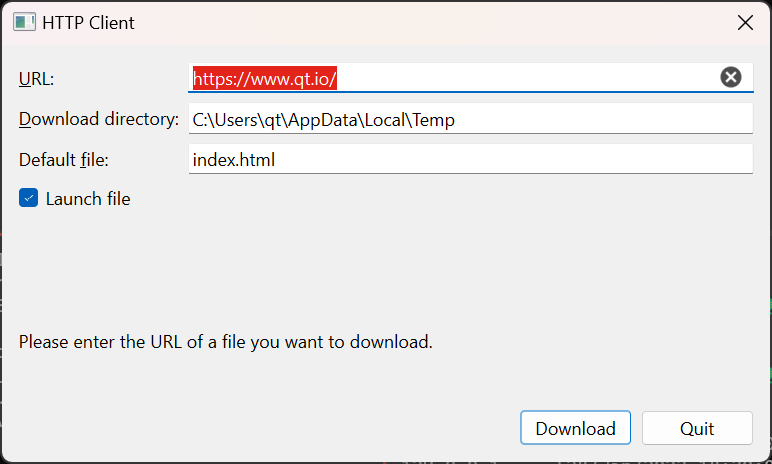

Network Examples

Qt is provided with an extensive set of network classes to support both client-based and server side network programming.
These examples demonstrate the fundamental aspects of network programming with Qt.
Demonstrates how to create a client for a network service. | |
Demonstrates how to receive information broadcasted over a local network. | |
Demonstrates how to broadcast information to multiple clients on a local network. | |
Demonstrates how to lookup a host name using QDnsLookup. | |
This example demonstrates how to implement client-side DTLS connections. | |
This examples demonstrates how to implement a simple DTLS server. | |
Demonstrates how to create a client for a network service. | |
Demonstrates how to create a server for a network service. | |
Demonstrates a simple HTTP client. | |
Demonstrates how to use SCTP on the client side. | |
Demonstrates how to use SCTP on the server side. | |
Demonstrates how to receive information sent to a multicast group. | |
Demonstrates how to send messages to a multicast group. | |
Demonstrates a stateful peer-to-peer Chat client. | |
Demonstrates how to communicate over an encrypted (SSL) connection. | |
The Threaded Fortune Server example shows how to create a server for a simple network service that uses threads to handle requests from different clients. It is intended to be run alongside the Fortune Client example. | |
Demonstrates complex TCP/IP operations. |